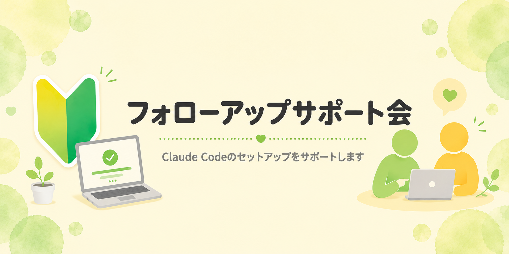
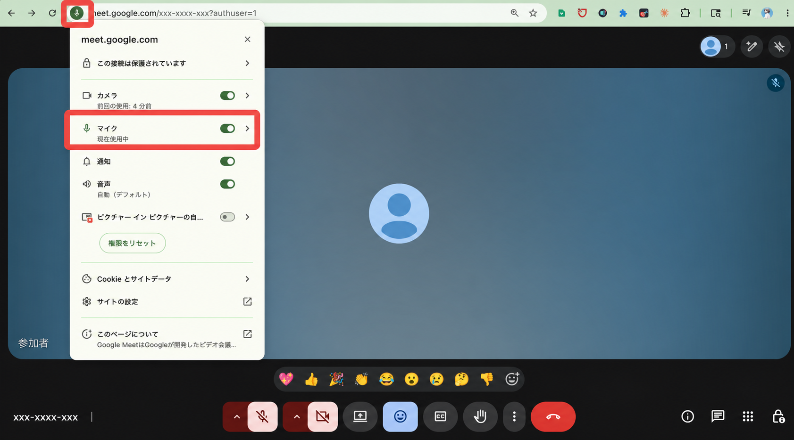
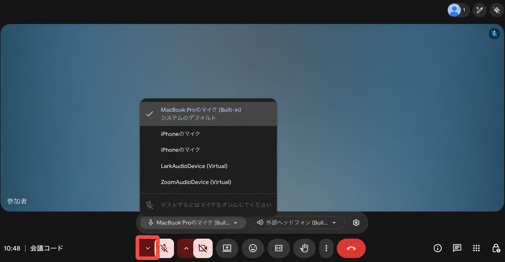
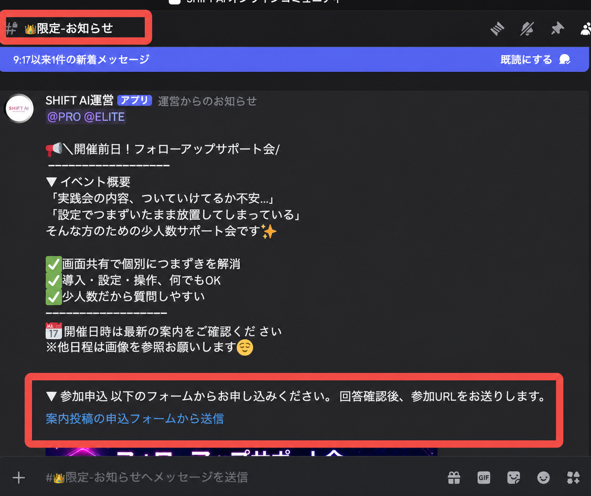

フォローアップ会で扱うこと
- Claude Codeのセットアップ
- 配布スキルの導入
- 初期設定で止まっている箇所の確認
少人数サポート
Claude Codeのセットアップや配布スキルの導入など、最初のつまずきを解消するためのフォローアップ会です。
画面共有できるか一度テスト
現在の状態を画面共有
設定を整え、学習を再開
ABOUT
フォローアップ会は、初期設定を終えて学習をスタートできる状態をつくるための場です。

課題を進める中で生まれた技術的な質問や、応用的な相談は、毎週のフィードバック会をご利用ください。
事前に届いた質問を優先して回答します。当日の質問は、時間や内容によって回答できない場合があります。
声が届かないときは、ブラウザの許可とMeetで選ばれている入力機器の両方を確認します。
アドレスバー付近のサイト設定を開き、「マイク」が許可になっていることを確認します。
Meet下部のマイクを確認し、赤いミュート状態なら解除します。
マイク横のメニューから、内蔵マイクや接続中のイヤホンなど、実際に使う機器を選びます。
話したときに音声レベルが動くか、相手に一言確認してから始めます。


画面共有とマイクの確認ができたら、最後に質問内容を前日までに送信してください。
Discordの「限定・お知らせ」から、最新のフォローアップ会案内を確認します。
案内投稿に記載されたフォームを開き、参加日と質問内容を入力します。
エラー画面や止まった操作も書いておくと、当日の確認がスムーズです。
どの手順で止まったか
画面に表示されたエラー
自分で試したこと
最終的にできるようになりたいこと

CHECK LIST
質問フォームを前日までに送信
止まっている画面を開いておく
当日までに画面共有を一度テスト
マイクの接続と許可を確認
初期設定で止まるのは珍しいことではありません。現在の画面を見せながら、一つずつ解消していきましょう。